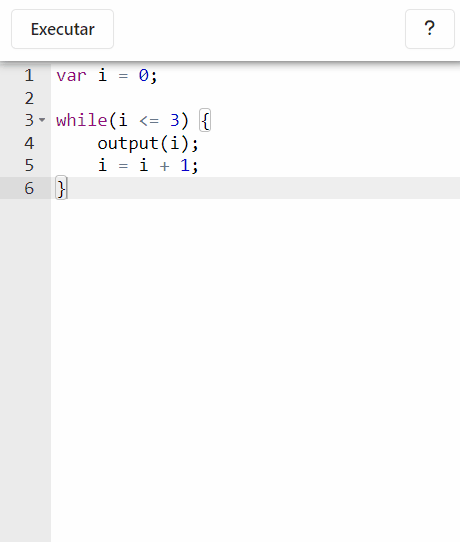

É um interpretador de código javascript, ou seja, você escreve código e clica em "Executar" para vê-lo executar passo a passo. É possível avançar e retroceder na simulação.

Avança um micro-passo na simulação. Por exemplo, num cálculo
aritmético como 2 + 3/5, ele passa individualmente
por cada etapa da conta
|
|
| Volta um micro-passo na simulação | |
Avança um macro-passo na simulação. Um macro-passo equivale a
vários micro-passos, geralmente significa que a simulação vai
avançar uma linha inteira de uma só vez. Por exemplo, num cálculo
aritmético como 2 + 3/5, ele pula toda a conta de uma
vez.
|
|
| Volta um macro-passo na simulação | |
| Avança a simulação continuamente até o fim (é possível pausar clicando de novo no mesmo botão) | |
| Volta ao editor de código |
Este simulador só é possível porque existem o Python Tutor, que é um simulador de código de onde praticamente imitamos a lógica de renderização, e o interpretador JS-Interpreter, que usamos para traçar o passo a passo do código javascript no próprio navegador sem a necessidade de um servidor.
Mas esses não são os únicos softwares que precisamos creditar. Veja no nosso Github todos eles e suas licenças. Seguem mais alguns:
Jsplumb para as flechas de conexão (vetores e objetos). Ace Editor, o editor de código. D3, biblioteca também usada para o desenho da simulação. Diff-match-patch, para guardar os "snapshots" do simulador que permitem retroceder a simulação. ESLint, que analisa o código e mostra as mensagens de erro. JSFrame.js para a janelinha de console da simulação.